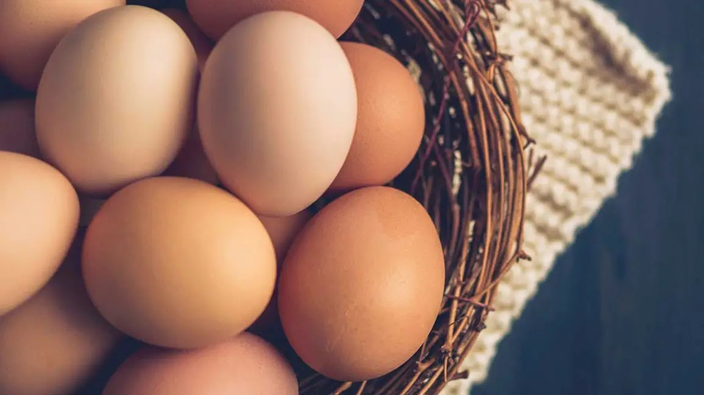

Your ultimate guide to everything eggs!
Welcome to the World of Eggs! Learn about their versatility, nutrition,
and how to cook them in various ways.

For more egg recipes, visit
Egg Recipes.
Why Eggs?
Nutritious and Delicious
Eggs are rich source of protein and contains essential vitamins and minerals.
Ingredients for a Perfect Omellete
- 3 eggs
- 1/4 cup milk
- Salt and Pepper to taste
- Butter
- Your choice of fillings: cheese, vegetables, ham, etc.
Steps to Make a Simple Scrambled Egg
- Crack eggs into a bowl and whisk.
- Add salt and pepper to taste.
- Heat a pan over a medium heat and melt some butter.
- Pour the eggs into the pan and stir continuously.
- Remove from heat when the eggs are set but still soft.
"You can make an omellete without breaking a few eggs." - Raphael Magro
How to Poach an Egg
Sound of a Perfect Sizzle